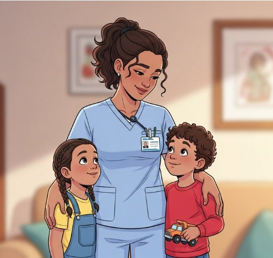
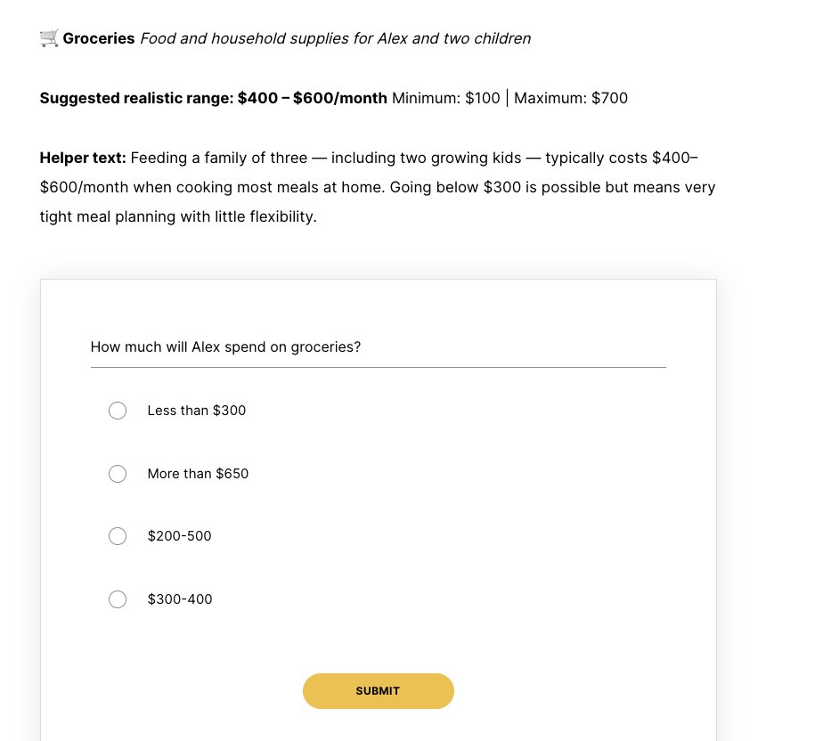
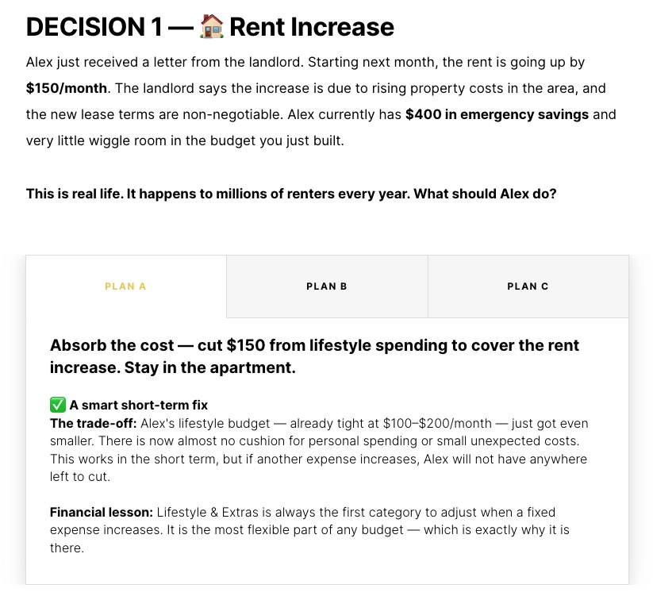
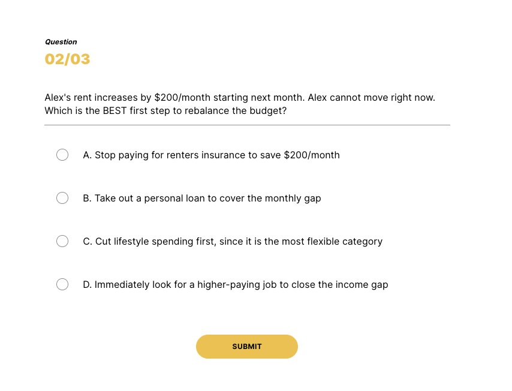
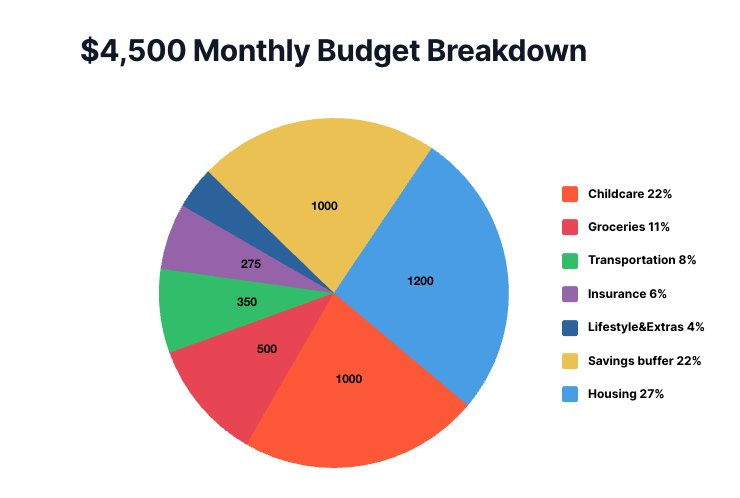

Project Overview
Career & Budget is a self-paced e-learning module for a high-school personal finance course. Learners follow one character, Alex, a nurse and single parent of two who takes home $4,500 a month. They split Alex's pay across six expense categories, then handle three unexpected financial shocks, and finally apply the same thinking to their own life.

Learning Objectives
By the end of the module, learners will be able to:
- Objective 1: Identify six core budget categories.
- Objective 2: Allocate a realistic income across essentials and extras.
- Objective 3: Reason through trade-offs when the budget is disrupted.
Learners & Context
The learners are high-school students who are curious about money and use their phones for almost everything, but have never paid rent, arranged childcare or kept an emergency fund.
Key Challenge
The needs analysis showed that abstract budgeting concepts bounce off this audience: students can recite financial terms without being able to use them.
An interview with a subject-matter expert reinforced this and added that engagement is highest when the scenario looks like a real young adult's life. That finding led to a realistic persona with a realistic paycheck, and to decisions that have consequences.
Design Framework
The workflow followed ADDIE, the objectives and assessments were planned backward with Understanding by Design, and screen-level decisions were driven by Cognitive Load Theory (Sweller, 1988): working memory is small, so the design should cut extraneous load and break intrinsic load into manageable pieces.
Chunking
The budget is built one category at a time: six small decisions instead of one overwhelming form.
Progressive disclosure
Each category shows its label, then a realistic range, then helper text, then the question. Information appears only when learners need it to act.
One repeating pattern
The same screen structure repeats six times, so learners stop spending effort on the interface and focus on the budgeting decision.
Module Structure
The learner journey moves from observing, to deciding for Alex under pressure, to applying the skill to their own life.
- WelcomeMeet Alex and the three objectives
- LearnSix expense categories, each with context
- Build BudgetAllocate Alex's $4,500 across all six
- Real Life HappensThree shocks force trade-off decisions
- ReflectTransfer the exercise to their own life
The two highlighted stages carry most of the learning and map directly to Objectives 2 and 3.
Inside the Module




Assessment
- Formative: six Build Budget questions and three Real Life decisions, each with immediate feedback that explains the reasoning.
- Summative transfer task: in Reflect, learners name one realistic financial shock in their own life and write their own Plan A, B and C.
- Benchmark: Alex's balanced allocation appears after the activity so learners can compare their choices to what balance looks like.
Tool Choice & Accessibility
Why Articulate Rise
Rise is responsive and mobile-first, which matches how teens use phones and school Chromebooks. It reads more like a social feed than a textbook, includes the interactions the module needs (knowledge checks, scenarios, process blocks and tabs), allows fast block-based revision, and exports to SCORM so teachers can track progress in any school LMS.
Designed for Diverse Learners
Plain language
Helper text and feedback target an 8th-grade reading level, and every financial term is defined in context.
Audio with transcripts
Learners who can't follow the audio speed can read along instead.
Numbers shown several ways
Tables, line charts and pie charts present the same figures, and an online calculator takes the arithmetic off learners' plates.
Learner-controlled pacing
No timed questions or auto-advance, which especially helps neurodivergent students and English-language learners.
Design Process & Reflection
I started with a nine-screen storyboard that planned every screen's visuals, interactions, production notes and alt text. While building in Rise, I tightened that plan into the five-stage path above: the career-comparison opener became background for Alex's story, and the drag-and-drop check became six chunked budget decisions that model the real task more closely.
Key Learnings
- A single persona gave every activity a shared context and made the transfer task feel like a natural next step.
- Cognitive Load Theory was most useful as a set of concrete rules (chunk, disclose, repeat) applied screen by screen.
- Showing the model answer after the activity, not before, kept learners reasoning instead of copying.
References
Sweller, J. (1988). Cognitive load during problem solving: Effects on learning. Cognitive Science, 12(2), 257–285.
Wiggins, G., & McTighe, J. (2005). Understanding by design (2nd ed.). ASCD.